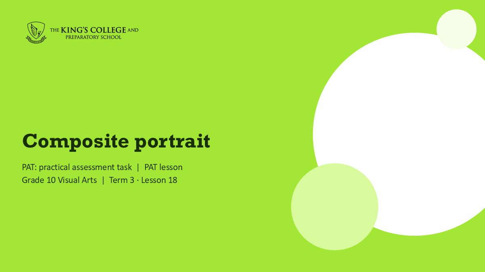

Term 3 · Lesson 18 · PAT lesson
Composite portrait
Start here
Today I will
- Understand what a composite portrait is
- Use juxtaposition while keeping unity
- Plan and start my composite portrait
Think first
If your portrait could be built from things that matter to you, which three would you choose?
Words to know
- Composite
- An artwork made by combining parts of different images or media into one whole.
- Juxtaposition
- Placing contrasting things side by side to create interest or meaning.
- Unity
- When all the parts of an artwork belong together and feel complete.
- Mixed media
- Using more than one material, such as collage, charcoal and paint, in one artwork.
- Collage
- An artwork made by sticking pieces of paper or other materials onto a surface.
Slides

Notes
Combining parts of different images or media into one portrait; unity across the composite.
Ways to build a composite portrait
- Split face: Half the face in one medium (charcoal) and half in another (collage or paint).
- Strips or grid: The face cut into strips or squares, each from a different image or medium.
- Image within the face: Shapes of shadow filled with maps, text or patterns that say something about you.
- Layers: A drawn face over a collaged or printed background that shows through.
Keeping unity in a composite
- Limit the palette: Choose two or three main colours or a tonal range that all parts share.
- Repeat elements: Repeat a shape, texture or pattern in at least two places.
- Keep the structure: Hold the features in the correct proportion so the face reads as one.
- Plan the focal point: Decide where the eye should go first, usually the eyes, and keep it clear.
Remember
Many parts, one face: juxtapose for interest, unify for strength.
Practical
You need: Reference images, scissors, glue, mixed media, side-lit photo, mapping study, VJ
Plan and start the composite portrait
- In your VJ, draw two quick thumbnails of different composite ideas.
- Choose one and annotate it: the approach, the materials and how you will keep unity.
- Lightly draw the main shapes of your face on the final paper using your mapping study.
- Select and cut the images or papers you will use for the first section.
- Start building the first section and step back to check the likeness.
- Note in your VJ which parts are juxtaposed and why.
Test yourself
- What is a composite portrait?
- Give one way to keep unity in a composite.
- What does juxtaposition add to an artwork?
Show answers
1. A portrait made by combining parts of different images or media into one artwork. 2. Any one: a limited palette, repeated elements, correct proportion of features, a clear focal point. 3. Contrast and interest, and often new meaning from placing different things side by side.
Finished early?
Unity test
Check that a mixed composition holds together.
- Draw a small face outline in your VJ and split it into two halves.
- Fill one half with pencil tone and the other with a pattern or text.
- Repeat one shape or colour in both halves.
- Write one sentence on whether the face still reads as one.